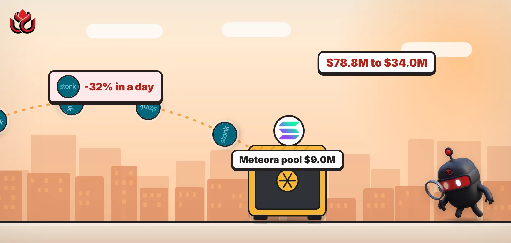
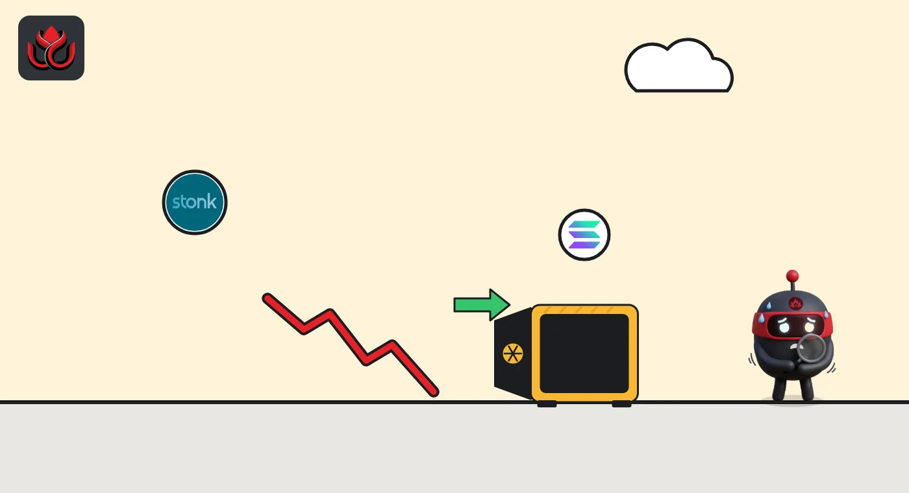

Solana launchpad token STONK fell 32% in a day and lost $45 million in under two days
StonkFun's STONK token dropped from about $0.10 to $0.044 between Saturday and Sunday evening, now 88% below its September record. Most of the trading ran through Solana DEX pools, CoinGecko's market list shows, and one Meteora pool handled nearly half of all trading.

Key points
- CoinGecko shows STONK at about $0.049 at 12:35 a.m. ET on November 9, 2026, down 32.2% in 24 hours and 60.1% in seven days.
- Its market value fell from about $78.8 million at midnight ET on November 7 to a low of about $34.0 million at 6 p.m. ET on November 8, a 57% drop, before a partial bounce to about $38 million.
- Of about $19.4 million in trading on the venues CoinGecko tracks, about 83% ran through Solana DEX pools. One STONK/SOL pool on Meteora carried $9.0 million, about 46% of the total.
What moved
STONK is the token of StonkFun, a Solana launchpad. It is on CoinGecko's trending list as its biggest loser, down 32.2% in a day. It traded between $0.0436 and $0.0745 in the last 24 hours.
The fall came in two steps. Between noon and 6 p.m. ET on Saturday, November 7, the price slid from about $0.093 to $0.070, about 24%. Between 6 a.m. and noon ET on Sunday it fell again, from about $0.070 to $0.052, about 26%. It bottomed near $0.044 at 6 p.m. ET Sunday, then bounced about 21% by 9 p.m. ET.
STONK market value on CoinGecko (ET)
US$ million
Source: CoinGecko hourly data, read November 9, 2026, 12:35 a.m. ET.
Where it traded
STONK is a Solana token, and CoinGecko's market list shows most of its trading on decentralized exchanges. This is a breakdown of trading venues, not an on-chain study of holders or wallets. CoinGecko lists 119 markets for it. Summing their 24-hour volume gives about $19.4 million. Centralized exchanges (Gate, BloFin, KCEX, BingX, LBank and Crypto.com) handled about $3.4 million of that, or 17%. Gate alone did $2.7 million.
The rest went through decentralized pools on Meteora, Raydium, Orca, Manifest and Hadron. The largest single market is a STONK/SOL pool on Meteora with about $9.0 million of volume. When almost half of a token's trading runs through one pool, a few large sales can move the price a lot.

Supply and what we could not check
CoinGecko lists about 777.6 million STONK in circulation, equal to the total supply, against a maximum of 1 billion. Daily volume of $16.6 million on CoinGecko's main figure is about 43% of the market value, which points to heavy short-term trading.
STONK peaked at $0.401 on September 21, 2026, so it is now about 88% below that record. We could not open a Solana explorer or StonkFun's website from our system for this story, so we cannot say who sold or whether the team commented. We do not know why the selling started.
What to watch
We will watch whether STONK holds above Sunday's $0.044 low, whether volume in the main Meteora pool stays this high, and whether StonkFun's official account on X says anything.
LC Insight analysis
This section is our reading of the facts above, not a statement of fact.
- We think the two-step fall, with nearly half of trading in one DEX pool, looks like heavy selling into thin on-chain liquidity rather than a broad exit across exchanges. We did not look at wallet or holder data, so this is a reading of the market and does not show who sold. This is not investment advice.
- One Meteora pool carried $9.0 million of the $19.4 million traded. With that much in one place, a few large sales can swing the price.
- A day's volume equal to 43% of market value points to short-term traders, and STONK still sits 88% below its September 21 record.
What's next
- Sunday's low near $0.044
- Volume in the main STONK/SOL Meteora pool
- Any statement from StonkFun
Disclaimer. This article is based on public information and the sources listed below as of the update time shown. It is for information only and is not investment, legal or tax advice. Figures may change as companies and authorities publish new data.
Sources
- CoinGecko, STONK price page (read November 9, 2026, 12:35 a.m. ET)
- CoinGecko API, STONK market data: price, supply, all-time high (read November 9, 2026, 12:59 a.m. ET)
- CoinGecko API, STONK hourly market chart, 3 days (read November 9, 2026, 12:59 a.m. ET)
- CoinGecko API, STONK markets and 24-hour volume by venue (read November 9, 2026, 12:59 a.m. ET)